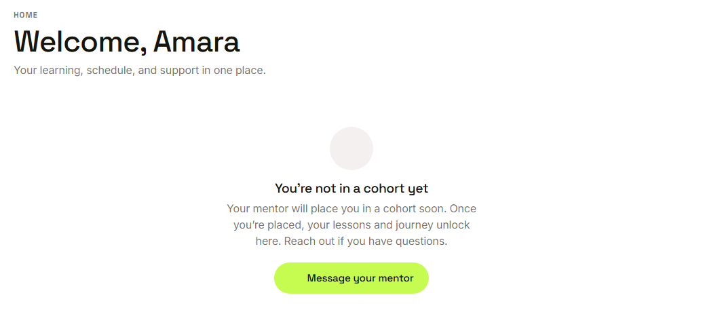
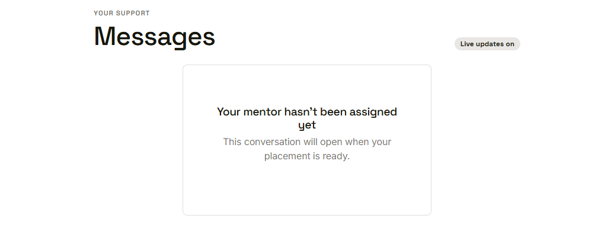

Waypoint · Video 081
Waiting to be placed in a cohort
What a youth sees before placement
You are not in a cohort yet

Plain words on the home page
Locked until placement
- Until a youth is placed, program content stays locked
- The home page explains why
- Lessons and journey unlock here after placement
Message your mentor
One button, one next step
No mentor assigned yet

The conversation opens when placement is ready
Things to remember
- The home page says you are not in a cohort yet
- Lessons and journey stay locked until placement
- Message your mentor opens once a mentor is assigned